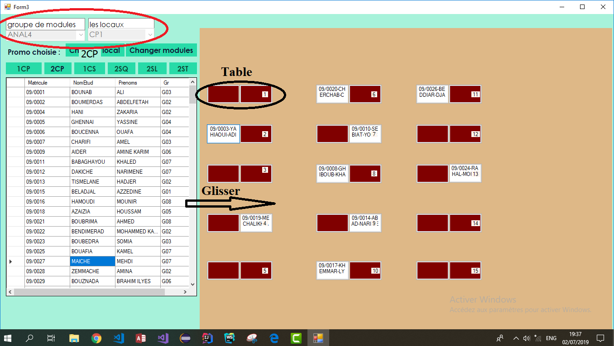

AffectINI est une application desktop dévelopée par des étudiants de l'ESI permet d'effectuer des affectations plus simples et efficaces des étudiants aux locaux des examens.
Manuel d'utilisation de l'application Affectini
Description de l'application
Ouverture de l'application
A l'ouverture de l'application l'utilisateur n'a pas l'acces aux fonctionnalités(le bouton "Menu" est grisé) jusqu'à ce qu'il se connecte en Cliquant sur le bouton Se connecter dans la barre d'outils qui se trouve à gauche de la page initiale.
Comment connecter à mon compte?
Dans la fenêtre de login:
- Remplir le champ "nom d'utilisateur".
- Remplir de champ "mot de passe".
- Cliquer sur le button "Connexion".


Après avoir entrer le bon nom d'utilisateur et le bon mot de passe, le bouton Menu sera accessible dans la barre d'outils.
Effectuer une affecttion
Comment démarrer une affectation?
- Cliquer sur le bouton "Menu".
- Cliquer sur l'onglet "Affectation" dans l'accueil.
- Choisir le type d'examen (CI,CF,Interrogation..etc)
- Saisir l'année et le semestre.
- Saisir le chemain de la BDD et cocher les promos à affecter.
- Choisir le mode d'affectation "Manuelle" ou "Automatique".
- Choisir le critère d'affectation si l'affectation est automatique.
- Cliquer sur le bouton "Suivant"pour poursuivre l'affectation.
- Pour les deux modes d'affectation l'utilisateur doit :
- Saisir les modules à passer successivement avec la date et l'heure (par promo en commençant par la plus inferieure).
- Cliquer le bouton "Ajouter" pour ajouter un module.
- Pour modifier une saisie il suffit de la selectionner et cliquer sur le boutton "Modifier" .
- Pour supprimer une ou plusieurs saisie il suffit de la (les) selectionner et cliquer sur le boutton "Supprimer" ou bien "Supprimer tout" pour supprimer toutes les saisies.
- Cliquer sur le bouton "Aller salles"pour commencer la saisie des salles.
- Entrer les groupes de modules(du meme niveau) que l'on souhaite passer dans les memes locaux.
- Saisir successivement les locaux avec le max d'étudiant souhaité pour chaque local.
- Pour ajouter un local cliquer sur le bouton "Ajouter".
- Pour passer au prochain groupe de modules cliquer sur le bouton "Le groupe suivant" et sur "Le groupe précèdent" pour passer au précèdent.
- Pour supprimer une ou plusieurs saisie il suffit de la (les) selectionner et cliquer sur le boutton "Supprimer" ou bien "Supprimer tout" pour supprier toutes les saisies.
- Cliquer sur le bouton "Suivant" pour passer à la prochaine promotion saisie au début ou bien pour passer à la prochaine étape.
- Si c'est une affectation automatique , en arrivant à cette étape l'affectation est déjà effectuée.
- La fenetre qui contient l'affectation des étudiants s'affiche.
- Choisir la promo, le groupe de modules et le local à afficher.
- Si c'est une affectation manuelle :
- Une fenetre qui contient la liste des étudiants plus un espace pour visualiser chacun des locaux déjà choisis.
- Choisir le groupe de modules à traiter.
- Saisir les locaux individuellement d'une façon successive.
- Commencer l'affectation:
- Glisser l'étudiant vers la position voulue.
- Cliquer sur l'étudiant placé dans sa position pour annuler son affectation.
- Quand le nombre d'étiduants affectés atteint le max du local prédéfni un message s'affiche. 


Attention:
Il est à éviter de saisir le critère "Moyenne Annuelle" avec la promo 1CP car cette promo (en particulier) n'a pas encore une moyenne annuelle dans l'école.


Attention:
Il est à eviter de saisir des modules differents dans les memes locaux et le meme intervalle horaire.
Restauration des resultat
Comment effectuer une restauration ?
- Cliquer sur le bouton "Restauration" dans l'accueil.
- Saisir l'année, la promo, le semestre, le type d'examen et le module à restaurer.
- Une fenetre qui contient le tableau restauré.
- Pour restaurer un etudiant en particulier il suffit de cocher le radio bouton "matricule" puis saisir le matricule de l'étudiant voulu.


Attention:
Pour pouvoir faire une restauration il faut avoir au moins une affectation déjà effectuerj, car la restauration se fait à partir d'une affectation.Etat d'une salle
Comment avoir l'etat d'une salle à un moment donnée?
- Cliquer sur le bouton "Etat salle" dans l'accueil.
- Saisir l'année, le local, la date et la plage d'heure (la plage d'heure est facultative).
- Une fenetre qui affiche l'etat du local voulu pour toute la journée si la plage horaire n'est pas définie ou bien dans un intervalle sinon.
- Cliquer sur le bouton poursuivre si une autre visualisation d'etat de salle est voulue.


Etats de sortie
Comment avoir une affectation en sortie ?
- Choisir l'année et le type d'affichage général ou particulier.
- Si le type choisi est "particulier" :
- Choisir le critère soit "matière/salle" soit "matricule"
- Si le critère choisi est "matière/salle":
- Entrer la matière puis cliquer sur le bouton "Poursuivre".
- Entrer la salle voulu puis cliquer sur le bouton "aller vers cristal report" pour afficher avec possibilité de modifier les donnée entrées en cliquant sur le bouton "retourner".
- En cliquant sur le bouton "aller vers cristal report" une fenetre pour entrer le local,le(s) module(s) et la date d'examination voulus.
- Cliquer le bouton "OK" pour confirmer pour afficher les résultats demandés.
- Si le critère choisi est "matricule":
- Il suffit d'entrer le matricule de l'étudiant voulu et cliquer sur le bouton "aller vers Cristal Report" pour afficher le resultat.
- Si le type choisi est "Général" la liste des étudiants en fonction de du local, la position, le module passé et la date et l'heure d'examination.